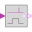

PartialBooleanSISO_smallPartial block with a BooleanInput and a BooleanOutput signal and a small block icon |
Connectors (2)
| u |
Type: BooleanInput Description: Boolean input signal |
|
|---|---|---|
| y |
Type: BooleanOutput Description: Boolean output signal |
Extended by (5)
|
Modelica.Blocks.MathBoolean Delay a rising edge of the input, but do not delay a falling edge. |
|
|
Modelica.Blocks.MathBoolean Output y is true, if the input u has either a rising or a falling edge and otherwise it is false (y=change(u)) |
|
|  |
Modelica.Blocks.MathBoolean Output y is true, if the input u has a falling edge, otherwise it is false (y = edge(not u)) |
|
Modelica.Blocks.MathBoolean Output y is true, if the input u has a rising edge, otherwise it is false (y = edge(u)) |
|
|
Modelica.Blocks.MathBoolean Logical 'not': y = not u |